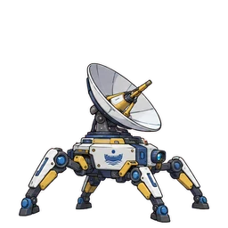

Robot Sensor
Mesin
Ringkasan
| HP (tertulis) | 22 |
|---|---|
| Laju serang | x0.83 |
| Kecepatan | Normal |
| Gerakan | Darat |
| Perilaku | Mengejar heroine |
| Jarak sadar | 6 kotak |
| Muncul di | Stage 63 - Stage 80 |
| Medan tambahan | Tidak ada |
| Sifat |
|
Jebakan yang tidak mempan
Hanya dari data jebakan (jenis gerakan, sifat yang diabaikan, dan imunitas keluarga musuh). Aturan khusus boss dan level jebakan tidak dihitung.
| Jebakan | Alasan |
|---|---|
| Semua efeknya adalah efek yang kebal bagi keluarga musuh ini | |
| Hanya mempan pada keluarga atau jenis gerakan musuh tertentu | |
| Semua efeknya adalah efek yang kebal bagi keluarga musuh ini | |
| Tidak bisa menyasar musuh Darat | |
| Tidak bisa menyasar musuh Darat | |
| Hanya mempan pada keluarga atau jenis gerakan musuh tertentu |